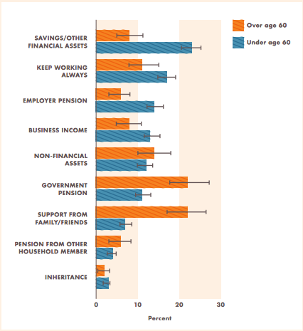

Moving forward on aging and financial inclusion
By Allyse McGrath, Senior Associate, Center for Financial Inclusion at Accion
Developing countries are aging at a rapid rate, and Latin American countries are a particularly strong example of this trend. In Peru, for example, the ratio of people over the age of 65 will jump from 1 in 10 to 1 in 4 by 2050. This demographic shift represents both a great challenge and a great opportunity, particularly in the field of financial services.
And yet, aging is often considered a taboo subject. While population aging is a product of successful development, effective healthcare, and increasing life expectancy, few people want to think about what that might mean in their own lives or the lives of those around them. Financing expenses in later life, mitigating the consumer protection issues associated with aging, and designing effective social and contributory pension systems are critical objectives that do not receive enough attention in international development. Despite not receiving enough attention, however, we have seen proof that there is much more happening on aging and financial inclusion than one might think.
A recent meeting on aging and financial inclusion held at the Inter-American Development Bank confirmed that while it may not be a subject of frequent conversation, there is work that should and is being undertaken on the topic. In fact, more ideas emerged to address this issue during the meeting than there was time to discuss.
Central to the findings presented in Aging and Financial Inclusions: An Opportunity is the gap between people’s perceptions of their ability to save and the reality of the amount of savings that they have. When asked how they will support themselves in old age, people most often point to personal savings. In reality, however, older people are relying most heavily on family and government pensions to support themselves. With a lack of pension systems to cover those who fall between social assistance and private pension savings systems, many turn to informal financial services that are less reliable in the long run. Additionally, age caps often directly restrict persons over the age of 65 from accessing traditional credit.
Figure: Strategies to Cover Old-Age Expenses, Colombia (2013)
Source: Rekha Reddy, Miriam Bruhn, and Congyan Tan, Financial Capability in Colombia: Results From a National Survey on Financial Behaviors, Attitudes, and Knowledge (Washington, DC: World Bank, 2013).
One of the key findings from the report and central points of discussion, therefore, was the importance of encouraging early contributions to pensions funds. Currently, these are largely restricted to wealthy populations, but new technology for person-to-government (P2G) payments could widen this to better access a growing aging population at the bottom of the pyramid. It will also be important to explore extending the terms of commitment savings products to better incentivize early saving.
To support such actions, one observation that emerged in the discussion is that there is great potential for existing data and research to provide additional insight to how people access and use financial services across their lifecycle, and in particular as they prepare for older life. Perhaps this means reviewing unlikely sources for disaggregated data, mining data that has already been gathered, and exploring insights from big data. Existing research such as financial diaries, technology and mobile money surveys, and demand side surveys on access and use can easily build in an age component to their survey and analysis.
In the insurance field, addressing this lack of information may mean developing new risk profiles for aging populations that would affect the provision of both insurance and also credit. Insurance companies have the ability to reexamine actuarial data so as to adjust risk assessment to changing life expectancy and better healthcare around the world. Such changes would open the opportunity for increased credit availability for older people.
Other ideas emerged as well. Asset building, an important goal at many stages of life, was proposed as a possible solution to the issue of needing to empower people to increase their readiness for later life. Financial consumer protection was highlighted given that older people often become targets of scams and fraud. The Multilateral Investment Fund, member of the Inter-American Development Bank Group, is trying to understand how to increase long-term savings through commitment devices and remittances.
We came away from the research and discussion with a renewed sense of perspective, recognizing that more is happening on this issue than meets the eye, and we look forward to continued conversation along these lines as we move forward on aging and financial inclusion.